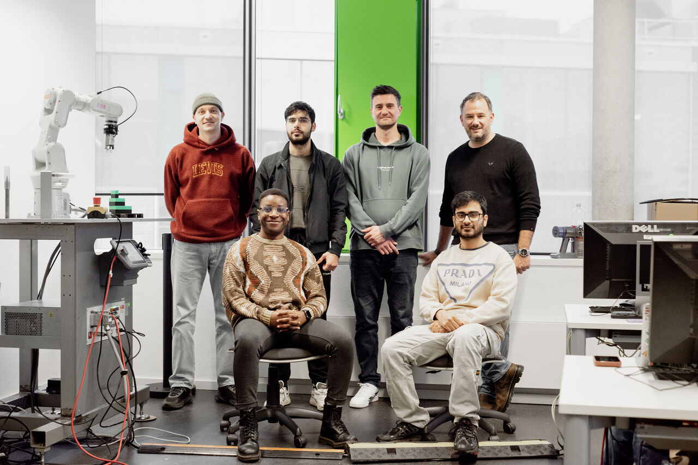

From simulation to
industrial robotics.
An interdisciplinary student project connecting industrial robotics, computer vision, simulation and usability engineering. I co-supervised the team at Hochschule Rhein-Waal, in collaboration with AEVTec and facilitated by TransRegINT.

My role
I co-supervised an interdisciplinary team of Computer Science and Logistics students alongside Marius Kaul. The project brought laboratory teaching together with an industrial logistics scenario, using the ABB IRB 1100 platform provided through the collaboration with AEVTec.
The students developed the robotics solution. Our supervision supported a project that connected hardware, robot software, simulation and evaluation in an industrial context.
Explore my teaching & supervisionFrom virtual to physical
The team connected physics-based simulation in NVIDIA Isaac Sim with ROS 2 and real hardware. This brought development and validation into the same workflow as the physical robot and its logistics task.
The ABB IRB 1100, 3D printing and hardware prototyping.
A ROS 2–based robot stack connected to NVIDIA Isaac Sim.
Perception, user studies and cost–benefit analysis for automation.
The technical scope
The project gave the student team hands-on experience across several connected areas:
- 3D printing and hardware prototyping.
- ROS 2–based robot stack development.
- High-fidelity simulation with NVIDIA Isaac Sim (Omniverse) connected to ROS 2.
- Depth sensing and point cloud mapping.
- Navigation, perception and manipulation pipelines.
- User studies and cost–benefit analysis for automation.
Combining Computer Science and Logistics placed engineering decisions alongside the practical and human considerations of introducing automation.
A shared effort
AEVTec – Automation Engineering Vision GmbH provided the platform and industry expertise through Jörg Kolbe.
The cooperation was facilitated by TransRegINT at Hochschule Rhein-Waal, with support from René König and Miriam Drazek.
At the Usability Lab, Prof. Dr. Kai Essig provided the multidisciplinary research setting, and Marius Kaul contributed his robotics expertise as co-supervisor.
The group photograph is by Andrea Polk.
Connect research with an industrial challenge.
Discuss a collaboration